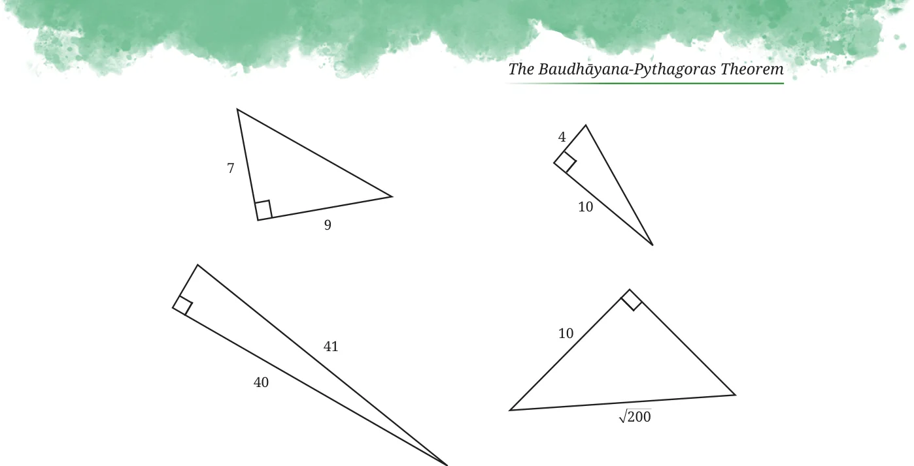
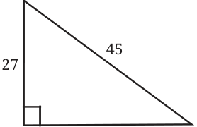
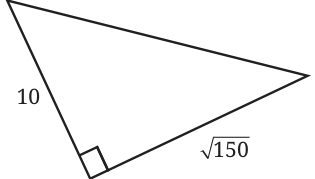
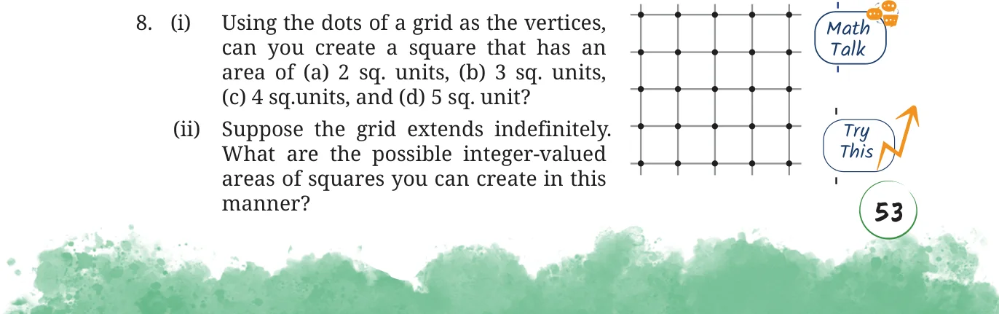

- Find the diagonal of a square with sidelength 5 cm.
- Find the missing sidelengths in the following right triangles:



- Find the sidelength of a rhombus whose diagonals are of length 24 units and 70 units.
- Is the hypotenuse the longest side of a right triangle? Justify your answer.
- True or False: Every Baudhāyana triple is either a primitive triple or a scaled version of a primitive triple.
- Give 5 examples of rectangles whose sidelengths and diagonals are all integers.
- Construct a square whose area is equal to the difference of the areas of squares of sidelengths 5 units and 7 units.

- Find the area of an equilateral triangle with sidelength 6 units.
[Hint: Show that an altitude bisects the opposite side. Use this to find the height.]